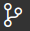
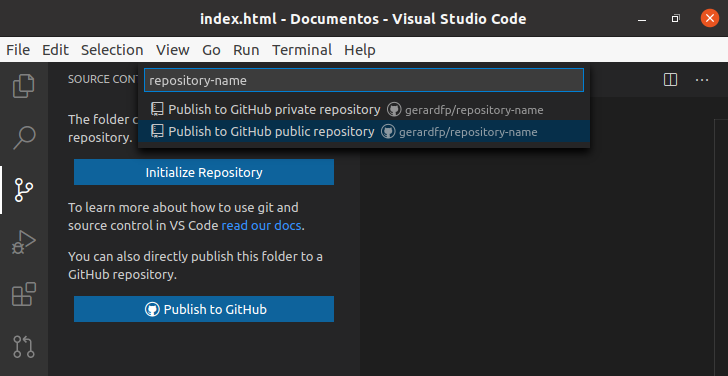
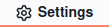
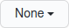
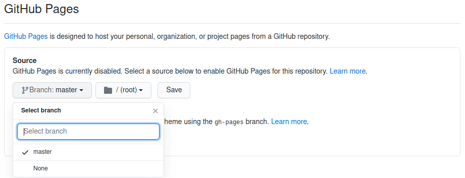

<meta charset="utf-8">
<meta name="viewport" content="width=device-width, initial-scale=1">
<script src="https://cdn.jsdelivr.net/npm/clipboard@2.0.6/dist/clipboard.min.js"></script>
<script type="module" src="/sofi/js/script.js"></script>
<link rel="stylesheet" href="/sofi/css/estil.css">

<section>
    <h1>Publicar a Github Pages</h1>

    <p>Per a publicar una web a GitHub Pages, primer s'ha de publicar el repository a GitHub. </p>
    <fer>       
        <p>Fes clic sobre  i després a . 
        <p>Posa-li el nom al repository (per exemple: <name><nom-repository>lamevaweb</nom-repository></name>).</p>          
          
    </fer>

    <p>Un cop estigui publicat el repository, s'ha d'activar la publicació a GitHub Pages</p>
    <fer>
        <p>Ves a la pàgina del 
            repository <url>https://github.com/<red>elteusuari</red>/<red><nom-repository>lamevaweb</nom-repository></red></url> 
            <br>i fes clic a la pestanya .
        <p>Baixa avall fins a la secció "GitHub Pages". 
            Desplega on diu  en l'apartat Source
            i selecciona la branca "master".</p>
        
    </fer>
    
    <p>La pàgina quedarà publicada a la URL 
            <url>https://<red>elteuusuari</red>.github.io/<red><nom-repository>lamevaweb</nom-repository></red></url></p>
</section>